Simulation Framework
Developed during my Master's thesis at Bosch Ovar, this Python desktop application was built to model production lines as discrete-event simulations using real shop-floor data. The tool combines a visual line editor, spreadsheet-driven timing import, validation, execution, and dashboard analysis in one engineering workflow.
Overview
This project was designed as an engineering tool, not just an academic artifact. It lets the user place sources, processes, buffers, operators, conveyors, and targets on a canvas, define their behavior from configuration dialogs, and run the resulting model from the same desktop application.
The thesis work focused on bringing real production-line structure and data into a simulation environment that stays inspectable. Instead of jumping between drawings, spreadsheets, and separate scripts, the application keeps modeling, validation, logging, and dashboard views in one place.
Application-focused showcase
This page is intentionally centered on the software itself: the interface, workflow, and simulation tooling rather than the thesis results chapter.
The modeled Bosch scenarios include dedicated operator views from OP1 to OP4.
Two Bosch line cases are represented through full-line and operator-focused models.
Dashboard, process analytics, and financial results stay inside the same run view.
Timing samples and supporting data can be imported from spreadsheet-based work packages.

Project Story
The thesis was about turning line knowledge into a simulation workflow that felt usable in a real engineering context, not just demonstrable in a report.
Evaluating changes to a production line is hard when information is spread across spreadsheets, drawings, and manual reasoning. The project needed a practical way to represent stations, buffers, conveyors, operators, and validation rules inside one workspace.
The software had to stay approachable for engineering use while still supporting the structure needed for discrete-event simulation.
Build a desktop application that feels closer to an engineering tool than a one-off academic script. The interface should let a user build the flow visually, configure each node from dialogs, import timing samples, and run the model without changing code.
That meant treating data import, validation, logging, and dashboard inspection as first-class parts of the application.
The finished tool ties together modeling, validation, run parameters, logs, and KPI dashboards in one Python desktop application. It supports both full-line layouts and narrower operator-specific views, making the simulation easier to inspect from multiple angles.
The result is a project page that is better understood as a simulation application showcase than as a thesis summary.
Technical Stack
Simulation Workflow
The application follows a clear sequence from line construction to run analysis, keeping the workflow visible instead of hiding everything behind a single execute button.
Build the system on the canvas
Start with sources, processes, buffers, conveyors, operators, and targets, then arrange them visually inside the tabbed workspace.
Configure each element from dialogs
Dedicated add/edit windows capture connectors, operation modes, process times, operator properties, images, and other node-level settings.
Import timing data from spreadsheets
Process-time samples can be pasted or imported, making it easier to bring real industrial data into the simulation model.
Validate the topology before running
Connector counts, missing source or target nodes, and other structural issues are checked before the system is allowed to run.
Set simulation and business parameters
The runtime window captures time horizon, shift structure, implementation cost, and unit profit so the model can be executed in a realistic scenario.
Inspect logs, KPIs, and financial views
After execution the application exposes operator traces, piece traces, utilization, throughput, and financial summaries from the same desktop tool.
Key Screens
The interface is organized around three main surfaces: building the model, configuring the nodes, and reviewing what the run produced.
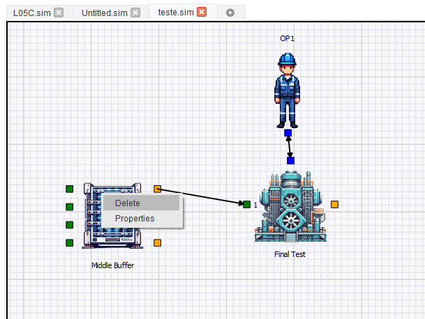
Canvas and element tree
The main window combines searchable elements, model tabs, and a grid canvas for composing the line layout visually.
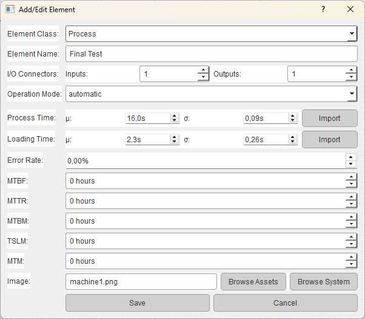
Dialog-driven setup
Element properties are edited from focused dialogs, keeping machine, process, and operator setup readable and explicit.

Integrated KPI dashboard
Production indicators, process analytics, and financial views live inside the same application instead of being exported to a separate tool first.
Architecture
The codebase is split into focused Python modules so the GUI, simulation logic, logging, and statistical analysis layers can evolve without collapsing into one monolithic file.
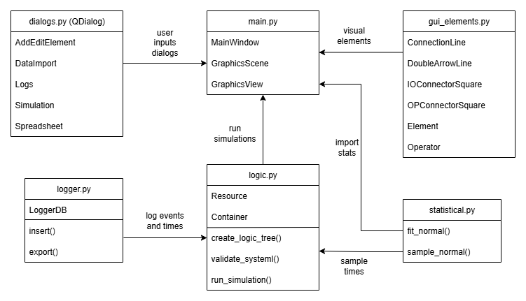
main.py
Owns the main application shell, menu actions, workspace tabs, and the overall user entry point.
gui_elements.py
Defines the canvas-side visual elements and the UI pieces used to render nodes and interactions.
dialogs.py
Handles the add/edit element windows and import flows that keep configuration work structured.
logic.py
Contains the simulation behavior, connectivity rules, and the execution-side logic behind the modeled system.
logger.py
Records operator activity and other event traces so a run can be inspected after it finishes.
statistical.py
Converts run data into KPIs, process analytics, charts, and financial summaries shown in the dashboard.
Interface Walkthrough
A screen-by-screen tour of the application, from the blank canvas and configuration dialogs to validation, logs, and dashboard inspection.
Bosch Line Models
The application was used to represent complete line layouts and narrower operator-focused slices, making the system easier to inspect at both the flow level and the workstation level.


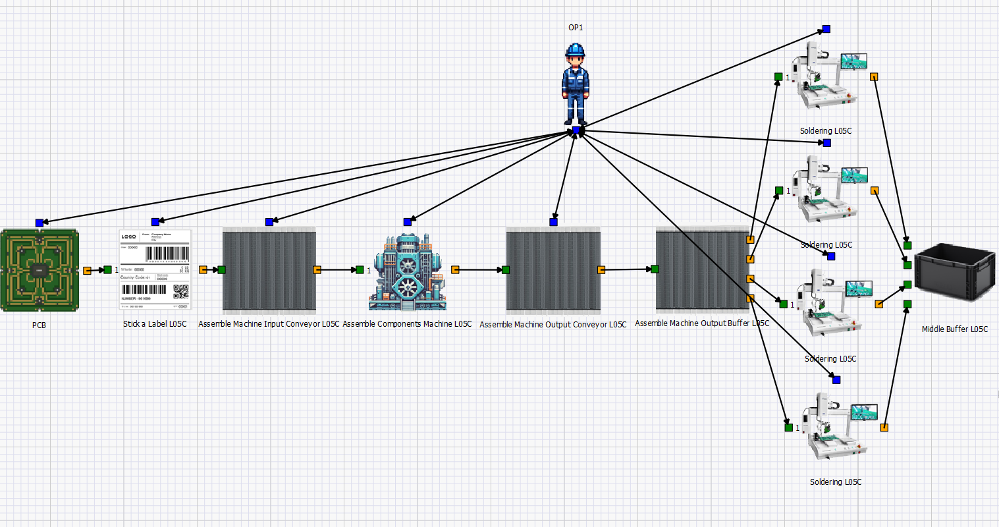
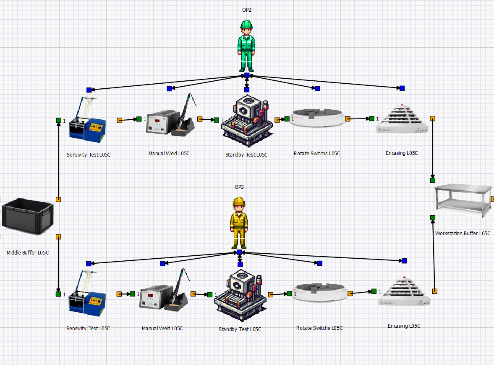
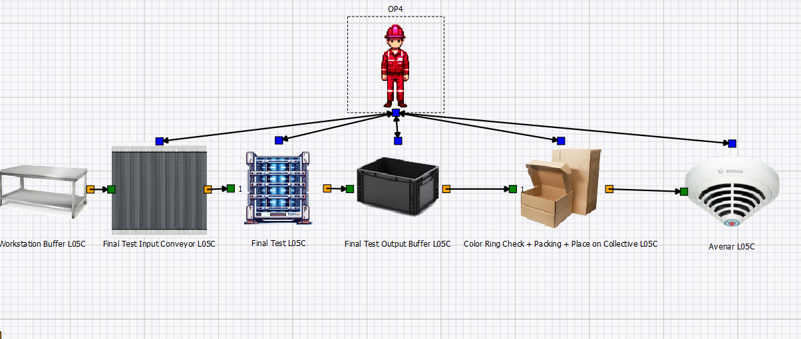
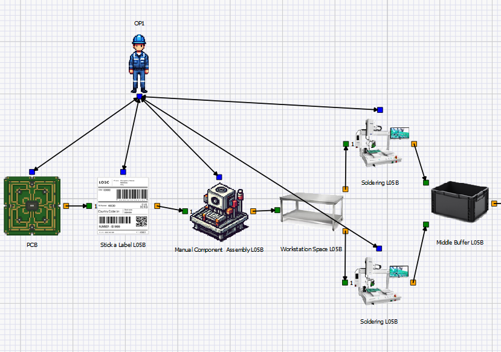
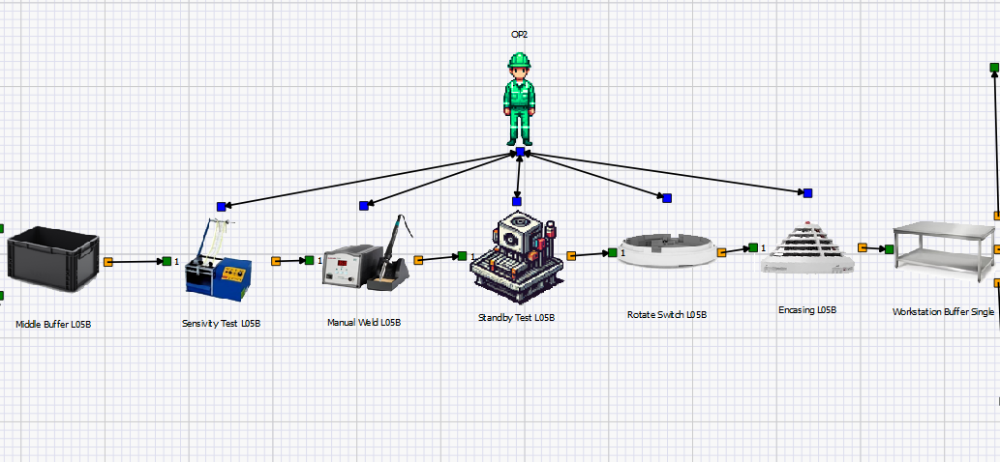
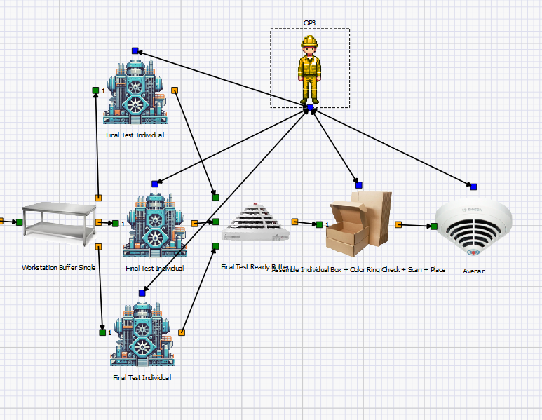
Validation and Traceability
The tool does more than draw nodes. It validates connector counts before execution and records run-time activity so the behavior of operators and pieces can be inspected after the run.


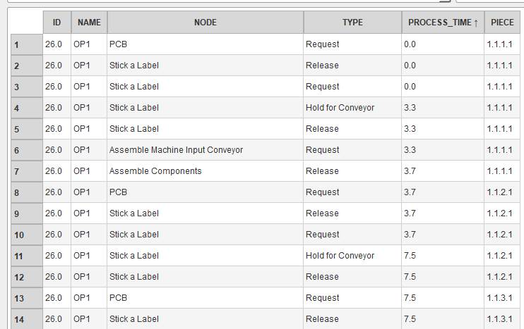
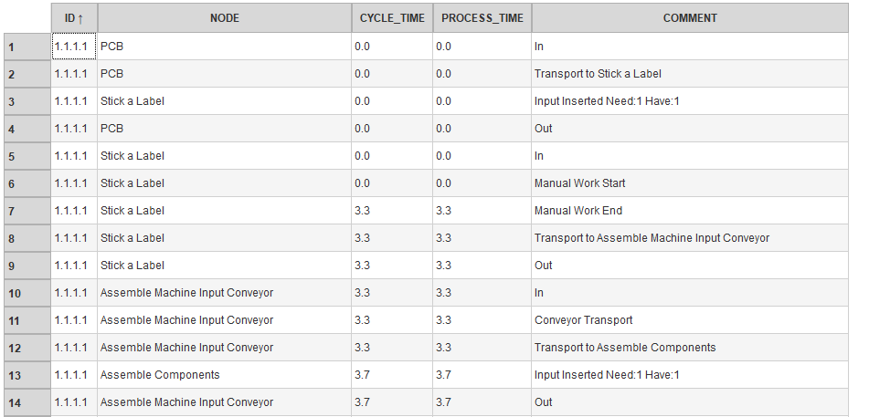
Project Files
Open the thesis document, jump straight to the software chapter, or head back to the full project list.